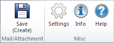

Introduction¶
Outlook interface:
The installation extends the Outlook application by adding the OfficeLink menu and toolbar.
Outlook: OfficeLink toolbar
Create e-mail/attachment:
The system Microsoft Office integration provides Outlook with the option of archiving individual messages directly from Outlook in the form of a
MSGfile as a document in the system. In Outlook,MSGfiles represent a complete message object including all attachments. The extension also provides the user with the option of separately archiving any received attachments to the respective (selected) message in the system and/or the message itself. The user receives the option—in the form of a dialog—of selecting which elements are to be archived separately. In addition, a decision can be made with each complete archiving procedure as to whether separately archived attachments are to be extracted from the message (MSGfile) before these themselves are archived in the system. Furthermore, as part of the archiving procedure the user is offered the option of whether successful archiving is to be followed by automatic deletion of the message file in Outlook.For each individual file to be archived (both message and attachments), the create mask is displayed in CIM Database/WIN. The create mask for the message provides the option of prepopulating individual fields with information (such as Subject or Sender) of the underlying message by configuring the system.
Note
If attachments are not created as documents, but appended to the e-mail documents as files in CIM Database/WIN, the create mask for these files is automatically filled-in and skipped.
Note
The assignment configuration of the metadata of a message and the respective system attributes of a create mask is taken care of by the system administrator.
Append document:
The add-in also provides the option of appending documents from the system directly to the new message as an attachment when composing a new message. This process is initiated via a toolbar in the message window.
Settings:
The OfficeLink administration manual includes the settings options in the option dialog. Contact your system administrator if you have questions.